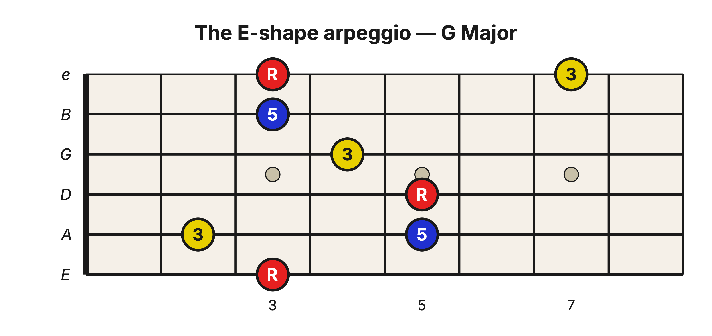
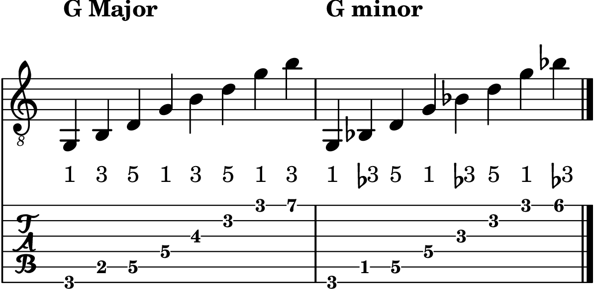
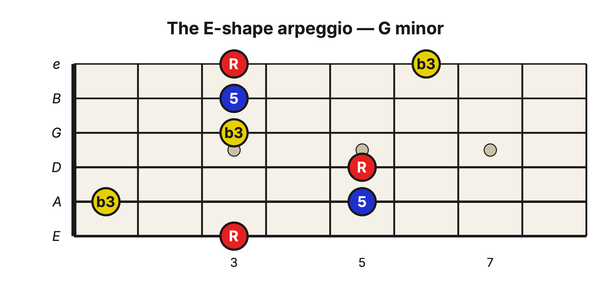
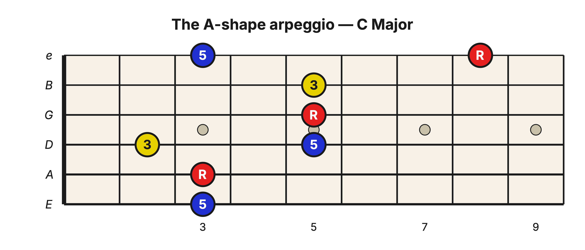
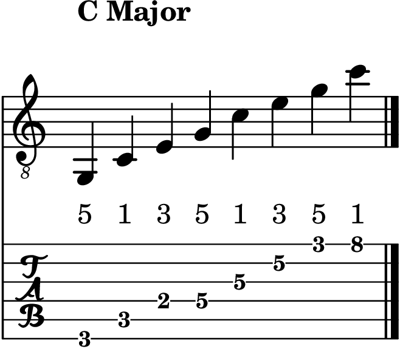

Level 2 · Chapter 20
The Fretboard: The Triad Arpeggio
Strum a chord and its three notes speak at once. Make them take turns instead, one note at a time, and you are playing an arpeggio.
That is the whole definition: an arpeggio is a chord played note by note instead of all together. On the guitar there is one wrinkle worth knowing up front: a chord grip and its arpeggio are not quite the same set of frets. The grip doubles roots and 5ths to fill six strings; the arpeggio patterns in this chapter place the same chord tones in a clear ascending order and add useful octave placements beyond the notes held in the grip. You will feel the difference immediately.
The E-shape arpeggio
Strummed, the G barre at the 3rd fret hands you its notes in whatever order the strings happen to hold them: 1, 5, 1, 3, 5, 1, roots and 5ths doubled, the one 3rd buried in the middle. This E-shape pattern is stricter. It plays the chord in the order the chord is built: root, 3rd, 5th, then root, 3rd, 5th again, climbing until the strings run out.

Hold the barre and climb: G on the low E string (3rd fret), B on the A string (2nd fret), D on the A string (5th fret), G on the D string (5th fret), B on the G string (4th fret), D on the B string (3rd fret), G on the high e string (3rd fret), and one last B at the 7th fret of the high e string. Say the degrees as you go: 1, 3, 5, 1, 3, 5, 1, 3.
Two of those notes live outside the grip. The first 3rd sits one fret behind the barre on the A string, a small reach back. The last 3rd sits at the 7th fret of the high e string, a pinky reach up. The barre chord skipped them both, doubling roots and 5ths instead; the arpeggio puts them back. And that top note is worth the reach, because it rounds the climb out to an even eight notes, which sits perfectly in a steady count of eight, up and back down.

Now make it minor. Every 3rd in the pattern drops one fret: the A string’s 2nd fret becomes the 1st, the G string’s 4th becomes the 3rd, and the high e string’s 7th becomes the 6th. Climb again: 1, ♭3, 5, 1, ♭3, 5, 1, ♭3.

The A-shape arpeggio
The A shape hides a surprise: its arpeggio begins on the string the chord never strums. For C at the 3rd fret, the climb starts on the low E string, and the first note is not the root. It is G, the 5th of the chord, at the 3rd fret.

From there the pattern runs in strict order, 5, 1, 3, 5, 1, 3, 5, 1: G, C, E, G, C, E, G, C. It ends the way a climb should end, on the root, at the 8th fret of the high e string. Starting from the 5th is exactly what makes the count come out to the same even eight notes as the E shape, with the root as the final word on top.

Three of the eight notes sit outside the barre grip: the opening 5th on the low E string, the 3rd on the D string (2nd fret, behind the barre), and the closing root at the 8th fret. Everything else is already under your fingers.
What the arpeggio trains
When you strum, the 3rd hides in the middle of the sound. When you arpeggiate, every degree stands alone for a moment, and your ear gets to meet each one against the root. The note you could never quite point to inside a strum steps out into the open, and in these patterns it steps out early: it is the second or third note you play.
You will also start recognizing these climbs everywhere: picked intros, verse patterns, the quiet halves of songs. Many of them are simply this, a chord’s notes taken in order while the pick walks up the strings.
Hear it
Play the G climb, then the Gm climb, slowly, several times in a row. The difference announces itself on the second note and comes back at the fifth and the eighth: every time a 3rd comes around, the minor version sits one fret low and the mood tilts dark. One half step, three appearances, and now you can hear precisely where the difference lives.
Try it yourself
Slide the whole E-shape pattern up so it starts on C, at the 8th fret of the low E string, and climb all eight notes. Which chord are you arpeggiating, and where does the final 3rd land? Check below.
Answer key
C: C, E, G, C, E, G, C, E, degrees 1, 3, 5, 1, 3, 5, 1, 3. The final 3rd (E) lands at the 12th fret of the high e string. Lower all three 3rds one fret and the same climb becomes Cm.
Take stock. You can now see a chord as a shape, count it as degrees, and hear it one note at a time, anywhere on the neck. The chord stopped being a block of sound and became three notes you know by name.